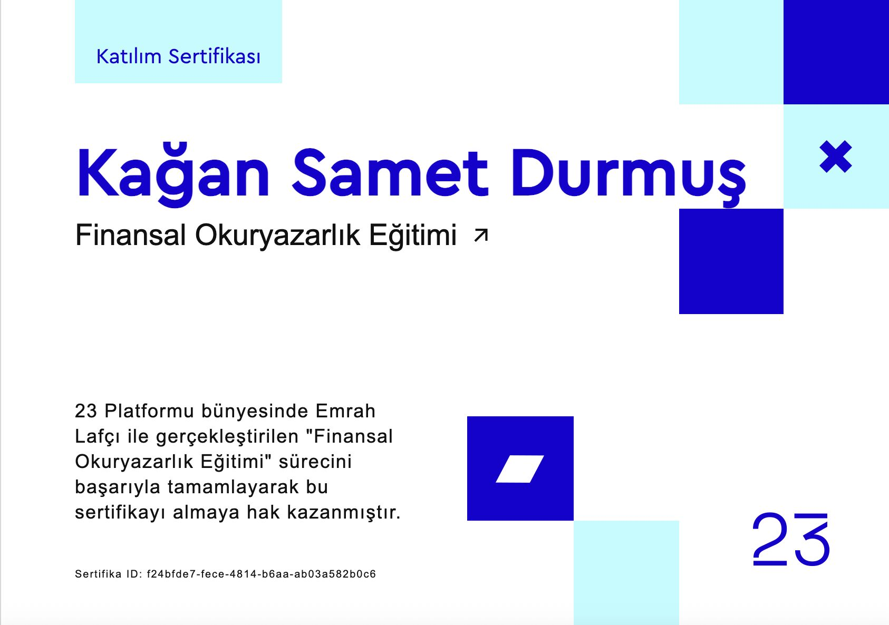

Обучение 1Ci Low-Code ERP для разработчиков ПО
Обучение, связывающее ERP-системы, бизнес-процессы и разработку ПО с точки зрения продукта и операций.
Пост LinkedIn о 1Ci TrainingЭта страница работает как слой сертификатов, а не просто как галерея. Она поддерживает основные проектные и skill-кластеры видимыми внешними сигналами.
Обучение, связывающее ERP-системы, бизнес-процессы и разработку ПО с точки зрения продукта и операций.
Пост LinkedIn о 1Ci Training
Подтверждение участия в проекте и мероприятии с социальным влиянием.
Пост LinkedIn о Новом Мире
Визуал сертификата, подводящий итоги обучения по предпринимательству и технологиям.
Пост LinkedIn о сертификате по предпринимательству
Участие в Innovation Day, демонстрирующее прикладное обучение и видимость на мероприятиях.
Пост LinkedIn об Innovation Day
Сигнал видимости, отражающий публичный охват профиля и профессиональную сеть в LinkedIn.
Пост LinkedIn о видимости профиля
Языковой сертификат, подтверждающий владение русским языком на уровне B1 и поддерживающий многоязычные коммуникативные навыки.
Пост LinkedIn о русском B1
Поддерживает прикладную базу в операционном учете, отчетности и отслеживании рабочих процессов с использованием Excel и офисных инструментов.
Пост LinkedIn об офисных программах
Запись о техническом обучении, усиливающая фокус на моделировании баз данных, SQL и управлении данными вне академических курсов.
Пост LinkedIn о SQL Server
Запись о финансовом обучении, укрепляющая базу для финтеха, исследований рынка и личной финансовой грамотности.
Пост LinkedIn о финансовой грамотности (FODER)
Дополнительная запись о сертификате, поддерживающая фокус на финансовой грамотности; следует рассматривать вместе с финансовыми исследованиями на страницах проектов.
Пост LinkedIn о финансовой грамотности (23)
Участие в саммите, поддерживающем видение городской трансформации, где я активно участвовал в организации.
Пост LinkedIn о саммите городской трансформации
Сертификат мероприятия и обучения Albaraka, осведомленность об исламском банкинге.